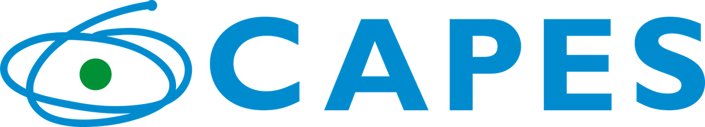

Destaques
|  |

|
|

Observatório CR de Arthur de Sa Ferreira está licenciado com uma Licença Creative Commons - Atribuição-NãoComercial 4.0 Internacional.
Copyright © 2021 Arthur de Sá Ferreira, PhD, em nome do colegiado do PPGCR-UNISUAM. Todos os direitos reservados. Última atualização em